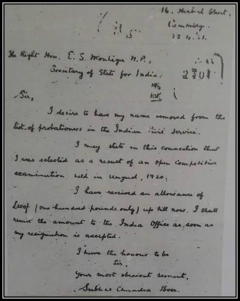
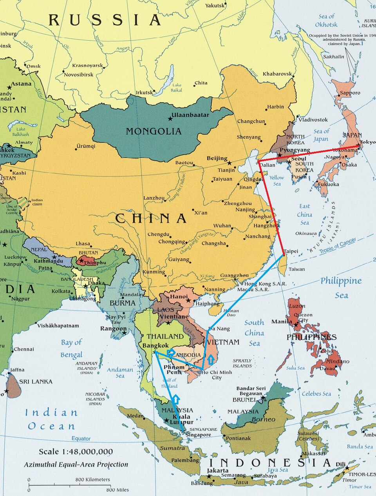

Introduction
The Man Behind the Name
Subhas Chandra Bose was not merely a freedom fighter — he was a revolutionary who believed that India's independence required more than petitions and negotiations. While the Indian National Congress pursued non-violent resistance, Bose forged a path of armed resistance, international diplomacy, and military strategy. In 1943, he took command of and reorganised the Indian National Army (INA), which had been first raised in 1942 by Captain Mohan Singh with the support of Rash Behari Bose [5]. He established a provisional government-in-exile and rallied support with his call: "Give me blood, and I shall give you freedom!"
Chapter 01
A Child with a Strong Mind
Subhas Chandra Bose was born on 23 January 1897 in Cuttack, Odisha, the ninth of fourteen children of Janakinath Bose, a successful lawyer, and Prabhavati Devi. The family was prosperous enough to educate all fourteen children. His father had grown up amid the liberal reform movements filtering into India through English thought in the nineteenth century.
As the ninth child and sixth son, Subhas felt a sense of deprivation of parental affection and attention. In his autobiography An Indian Pilgrim, he wrote: "The earliest recollection I have of myself is that I used to feel like a thoroughly insignificant being." His parents were preoccupied with career and family affairs.
At a school for European and Anglo-Indian boys run by the Baptist Mission, the young Subhas was taught English, Latin, and the Bible. Indian languages — Sanskrit and Bengali — were neglected. He spent the first sixteen years of his life in Cuttack and passed his entrance examination from Ravenshaw Collegiate School in 1913 before going to Calcutta for higher studies.
Sources for this chapter
S. C. Bose, An Indian Pilgrim; Leonard A. Gordon, Brothers Against the Raj, Ch. 1–2.

Portrait of Subhas Chandra Bose. Archival portrait of Netaji.
Historical Context — British India
In the late nineteenth century, India was the crown jewel of the British Empire. The Indian National Congress had been founded in 1885, and early nationalist sentiment was growing among the Western-educated middle class. The Jallianwala Bagh massacre of 1919 would later become a defining moment for Bose's generation, galvanising anti-colonial sentiment across the subcontinent.
1897
Born in Cuttack, Odisha
9th
Of 14 children
Chapter 02
The Career He Gave Up
From Presidency College to the Indian Civil Service — and the dramatic resignation that changed history.
Presidency College
Bose joined Presidency College, Calcutta. He was later expelled after he was held responsible for an incident involving Professor Oaten, who had reportedly made racist remarks towards Indian students. His personal role in the incident is disputed [1].
Scottish Church College
He then joined Scottish Church College and earned his B.A. in Philosophy. He was deeply inspired by the teachings of Swami Vivekananda and Ramakrishna Paramahamsa during this period.
London & ICS Examination
In 1919, under pressure from his father, Bose headed to London to take the Indian Civil Services (ICS) examination. In July 1920, he took the exams and came fourth — a remarkable achievement.
The Resignation
In April 1921, Bose withdrew from taking up a post with the ICS and returned to India that summer. He resigned because he believed he could not serve under British administration.

Resignation letter from the Indian Civil Service, 22 April 1921. Bose resigned from the ICS to join the freedom struggle.
Sources for this chapter
S. C. Bose, An Indian Pilgrim; Gordon, Brothers Against the Raj, Ch. 2–3.
Chapter 03
Entering the Freedom Struggle
In 1921, Bose worked under Chittaranjan Das, a prominent politician in Bengal. He served as the editor for Das's newspaper, Forward, and later started his own newspaper, Swaraj. In 1923, Bose was elected the President of the All India Youth Congress and also the Secretary of Bengal State Congress. He also served as the Chief Executive Officer of the Calcutta Municipal Corporation, with Das as mayor.
Bose was arrested eleven times by British colonial authorities and deported to Mandalay, Burma (Myanmar) in 1925 because he was suspected of connections with revolutionary movements.
During the mid-1930s Bose travelled in Europe, visiting Indian students and European politicians, including Benito Mussolini. He observed party organisation and studied communism and fascism in practice. In this period, he researched and wrote the first part of his book The Indian Struggle, which covered the country's independence movement in the years 1920–1934.
Turning Point — 1921
The resignation from the ICS and return to India marked the decisive break from a life of comfort under British rule. From this point forward, Bose dedicated himself entirely to the cause of Indian independence.
Sources for this chapter
Gordon, Brothers Against the Raj, Ch. 3–5; S. C. Bose, The Indian Struggle.

Gandhi and Bose at the Indian National Congress, 1938. Historic gathering at the 51st Congress session in Haripura.
Subhas Chandra Bose. Archival portrait of Netaji during his leadership of the Indian National Congress and the Forward Bloc.
Chapter 04
A Leader Rises
Bose was elected President of the Congress in 1938 at the Haripura session. He stood for unqualified Swaraj (self-governance) and the use of force against the British, which brought him into conflict with Mahatma Gandhi and his supporters.
In January 1939, at the Tripuri session, Bose stood for re-election as Congress president and defeated Gandhi's preferred candidate, Pattabhi Sitaramayya [2]. However, faced with opposition from the Gandhi-led working committee, Bose resigned the Congress presidency in April 1939.
On 3 May 1939, Bose founded the All India Forward Bloc, a faction within the Congress aimed at consolidating the political left. At its inaugural conference, he urged delegates to commit fully to the independence struggle.
1938
Congress President (Haripura)
1939
Forward Bloc Founded (3 May)
Sources for this chapter
Gordon, Brothers Against the Raj, Ch. 9–10; Sugata Bose, His Majesty's Opponent, Ch. 5.
Chapter 05
Two Visions of Freedom
Gandhi and Bose shared the same goal — India's independence — but their methods and philosophies differed. Despite their disagreements, they maintained mutual respect; in a radio broadcast from Singapore on 6 July 1944, Bose was the first to address Gandhi as the "Father of the Nation."
Bose's Approach
- Believed in achieving freedom through direct action and armed struggle
- Sought international alliances and foreign assistance
- Emphasised socialism, industrialisation, and national planning
- Advocated for complete independence without compromise
Gandhi's Approach
- Advocated non-violence (ahimsa) and civil disobedience
- Led major campaigns: Non-Cooperation (1920–22), Civil Disobedience (1930–34), Quit India (1942)
- Focused on rural self-reliance and traditional Indian values
- Believed in mass mobilisation through peaceful protest
Chapter 06
The Great Escape
After founding the Forward Bloc on 3 May 1939, Bose was arrested under the Defence of India Rules in July 1940 for anti-war speeches. He launched a fast in November–December 1940, demanding his release. As his health deteriorated, the British released him on 5 December 1940, placing him under house arrest at his Elgin Road residence in Calcutta, intending to re-arrest him once he recovered. Bose, with his nephew Sisir Kumar Bose, secretly planned an escape [3].
Step 01
Calcutta → Gomoh
On the night of 16–17 January 1941, Bose escaped from his Elgin Road residence disguised as Mohammad Ziauddin. His nephew Sisir Kumar Bose drove him by car to Gomoh railway station in Bihar.
Step 02
Peshawar → Kabul
From Gomoh, Bose travelled by train to Peshawar, continuing as Mohammad Ziauddin. From there he crossed into Afghanistan and reached Kabul, where he spent nearly 48 days waiting for transit arrangements, obtaining an Italian passport under the name Count Orlando Mazzotta.
Step 03
Kabul → Moscow
From Kabul, Bose travelled via the Soviet Union. He passed through Samarkand and Moscow under his Italian diplomatic cover.
Step 04
Berlin
Bose reached Berlin on 2 April 1941, having successfully traversed Central Asia and Moscow in one of history's most audacious escapes.
Route of the Escape, 1941
Chapter 07
Germany & the Free India Centre
In Germany, under the Special Bureau for India directed by Adam von Trott zu Solz, Bose established the Azad Hind Radio and the Free India Centre in Berlin. The Centre functioned as a government-in-waiting, publishing the Azad Hind newspaper, broadcasting radio programmes to India, and maintaining diplomatic contacts with Axis powers.
Free India Centre
Established in Berlin, the Centre served as the political headquarters for the Indian independence movement in Europe.
Indian Legion
The Free India Legion (later the Indische Legion) was formed from Indian prisoners of war captured in North Africa. It served as a military unit within the German armed forces.
Radio Broadcasts
Bose broadcast regular radio messages to India urging Indians to rise against British rule. His broadcasts reached audiences across the subcontinent.
The Berlin Years, 1941–1943
On 29 May 1942, Bose met Adolf Hitler. The meeting lasted about an hour, but Bose came away disappointed: Hitler offered only vague assurances and showed little concrete interest in Indian independence [4]. Bose's collaboration with the Axis powers was strategic rather than ideological — he sought military support from any power opposed to Britain. Historians debate the moral implications of this alliance, though Bose maintained that India's freedom justified the means. By early 1943, dissatisfied with progress in Germany, he turned his attention to Southeast Asia.
Sources: Gordon, Brothers Against the Raj; Sugata Bose, His Majesty's Opponent, Ch. 8.
Personal Life
While in Europe, Bose formed a close relationship with Emilie Schenkl, an Austrian woman he had met in Vienna in 1934. They married in 1937 in a private Hindu ceremony in Bad Gastein, Austria. Their daughter, Anita Bose Pfaff, was born in Vienna on 29 November 1942. Bose saw his daughter only briefly before departing for Southeast Asia. Anita later became an economics professor in Germany [6].
Sources: Sugata Bose, His Majesty's Opponent, Ch. 7; Krishna Bose, Emilie and Subhas.
The Submarine Voyage, 1943
In February 1943, Bose departed from Kiel, Germany, aboard the German submarine U-180. After a rendezvous in the Indian Ocean south-east of Madagascar, he transferred to the Japanese submarine I-29 — one of the very few civilian transfers between submarines in the Second World War. He arrived in Japanese-held Sabang, Sumatra, in May 1943, and proceeded to Tokyo to begin the next chapter of his campaign [5].
Sources: Lebra, Jungle Alliance; Fay, The Forgotten Army, Ch. 7.

Bose with German officers in Berlin, 1941–1943.
Chapter 08
The Indian National Army
The Indian National Army (INA) was first raised in 1942 by Captain Mohan Singh with the support of Rash Behari Bose, from Indian prisoners of war captured by the Japanese in Malaya and Singapore. In 1943, Subhas Chandra Bose arrived in Japanese-occupied Southeast Asia and took command, reorganising and expanding the force into a disciplined army of approximately 40,000 troops, composed of Indian POWs and volunteers from the Indian diaspora [5].
40,000
Troops under Bose's command
1943
Bose takes command of INA
1944
Imphal & Kohima campaigns
1945
INA surrenders as Japan falls
Chapter 09
Rani of Jhansi Regiment
In July 1943, Bose announced the formation of the Rani of Jhansi Regiment — among the first all-female combat units in modern South Asian military history. Led by Captain Lakshmi Sahgal, a doctor who served as head of Women's Affairs in the Provisional Government of Free India, the regiment began with about 500 women volunteers of Indian descent from Malayan rubber estates, growing to around 1,000 volunteers [7].
The women underwent military training — drills, route marches, weapons handling with rifles, hand grenades, and bayonets. The regiment was distributed between camps in Singapore, Malaya, and Burma.

Bose inspecting the Rani of Jhansi Regiment.
Chapter 10
Azad Hind & Port Blair
On 21 October 1943, Bose proclaimed the establishment of the Provisional Government of Free India (Arzi Hukumat-e-Azad Hind) in Singapore. It was a government-in-exile with its own currency, postage stamps, court, and civil code. It was recognised by nine Axis states.
30 December 1943
The Flag at Port Blair
On 30 December 1943, Bose hoisted the Indian tricolour at Port Blair in the Andaman and Nicobar Islands — the first raising of the Indian flag on territory administered by the Provisional Government under Japanese control [5]. The islands were designated the first territory under the government-in-exile's jurisdiction, and Bose renamed them Shaheed (Martyr) and Swaraj (Self-Rule).
The Sankalp Smarak memorial in Port Blair was later dedicated to commemorate this historic flag-raising.

Flag hoisting at Port Blair, 30 December 1943.
Chapter 11
Delhi Chalo — The INA Campaigns
In early 1944, the INA and Japanese forces launched their offensive into Manipur, advancing toward Imphal and Kohima. During the advance, the Indian flag was raised on the Indian mainland for the first time during the INA–Japanese campaign, in the area around Moirang in Manipur in April 1944 [5]. However, the offensive failed at both Imphal and Kohima. Heavy losses came mainly from disease, hunger, and the monsoon, compounded by overstretched supply lines and inadequate Japanese air support. The retreat began in 1944, and by 1945 the British Indian Army had reversed the Japanese–INA advance across Burma.
The Advance
The INA and Japanese forces crossed into Manipur and Nagaland. The initial advances raised hopes of reaching Delhi, though the operational plan depended heavily on Japanese logistics.
The Challenges
The monsoon turned roads into mud, supply lines broke down, and disease — including malaria, dysentery, and cholera — ravaged the ranks. The Japanese alliance could not provide the necessary air and logistical support.
The Retreat
The retreat from Imphal and Kohima in 1944 was devastating. Thousands of INA and Japanese soldiers perished from starvation and disease on the roads through the Burmese jungle.

INA soldiers during the Imphal–Kohima campaign, 1944.
Red Fort Trials & Political Legacy
While the INA campaign failed militarily, its political aftermath was profound. In 1945–46, the British put three INA officers — Shah Nawaz Khan, Prem Kumar Sahgal, and Gurbaksh Singh Dhillon — on trial at the Red Fort in Delhi. The Congress, led by Jawaharlal Nehru (who had himself qualified as a barrister), provided legal defence. The trials provoked widespread public sympathy, demonstrations, and the Royal Indian Navy mutiny of February 1946 [8].
Some historians argue the trials convinced Britain that Indian armed forces could no longer be relied upon to maintain colonial control, hastening the transfer of power. Others point to the broader context of post-war British decline, the Labour government's changed priorities, and the cumulative effect of decades of the Congress movement. The relative weight of these factors remains debated among scholars.
Sources for chapters 08–11
Fay, The Forgotten Army; Lebra, Jungle Alliance; Bayly & Harper, Forgotten Armies; Sugata Bose, His Majesty's Opponent, Ch. 10–12.
Chapter 12
The Final Journey
By August 1945, Japan's surrender was imminent and the INA campaign had collapsed. On 17 August 1945, Bose boarded a Japanese aircraft from Saigon, with an overnight stop at Tourane (now Da Nang), continuing to Taipei (then Taihoku). The intended destination was Dairen (now Dalian) in Manchuria. On 18 August 1945, the aircraft was reported to have crashed on take-off from Matsuyama/Taihoku airfield in Taiwan. According to the Japanese account, Bose suffered severe burns and died at a Japanese military hospital. The formal announcement of his reported death was broadcast by the Japanese news agency on 23 August 1945.
1943
Azad Hind Government proclaimed
1944
INA Campaign — Imphal & Kohima
1945
Reported death at Taihoku

Flight paths of Subhas Chandra Bose on 16, 17, and 18 August 1945. Blue: completed flight segments; Red: intended flight route not completed.
Complete Chronology
Timeline of Bose's Life
23 January 1897
Birth in Cuttack
Born to Janakinath Bose and Prabhavati Devi in Cuttack, Odisha. The ninth of fourteen children.
23 January 1897
Birth in Cuttack
Born to Janakinath Bose and Prabhavati Devi in Cuttack, Odisha. The ninth of fourteen children.
1919–1921
England & the ICS
Headed to London for the ICS examination. Came fourth in July 1920. Resigned in April 1921 and returned to India.
1921
Joins the Freedom Movement
Worked under Chittaranjan Das. Editor of Forward and founder of Swaraj newspaper.
1921
Joins the Freedom Movement
Worked under Chittaranjan Das. Editor of Forward and founder of Swaraj newspaper.
1938
Congress President — Haripura
Elected President of the Indian National Congress. Stood for unqualified Swaraj.
3 May 1939
Forward Bloc Founded
Resigned the Congress presidency in April 1939 after winning re-election at Tripuri. Founded the All India Forward Bloc.
3 May 1939
Forward Bloc Founded
Resigned the Congress presidency in April 1939 after winning re-election at Tripuri. Founded the All India Forward Bloc.
Night of 16–17 January 1941
The Great Escape
Escaped house arrest in Calcutta. Travelled through Afghanistan and the Soviet Union, arriving in Berlin on 2 April 1941.
21 October 1943
Azad Hind Government
Proclaimed the Provisional Government of Free India in Singapore. Took command and reorganised the INA.
21 October 1943
Azad Hind Government
Proclaimed the Provisional Government of Free India in Singapore. Took command and reorganised the INA.
30 December 1943
Flag Raised at Port Blair
Hoisted the Indian flag at Port Blair — the first such raising on territory under the Provisional Government's jurisdiction.
1944
Imphal & Kohima Campaigns
INA and Japanese forces advance into Manipur. The offensive fails at Imphal and Kohima; retreat begins in 1944.
1944
Imphal & Kohima Campaigns
INA and Japanese forces advance into Manipur. The offensive fails at Imphal and Kohima; retreat begins in 1944.
18 August 1945
Reported Death at Taihoku
Reported to have died from severe burns after his aircraft crashed on take-off at Taihoku airfield, Taiwan. The circumstances remain one of India's greatest unsolved mysteries.
A Historical Investigation
The Mystery
Official Inquiries, Evidence, and Alternative Theories
For decades, the official position of the Government of India has been that Bose died following a plane crash on 18 August 1945. Multiple official inquiries have examined the evidence, reaching conflicting conclusions.
How to Read the Evidence
Official Inquiries & Commissions
Shah Nawaz Committee, 1956
Concluded Bose died in the Taihoku crash. Appointed by Government of India [9].
Khosla Commission, 1970–1974
Also concluded Bose perished in the crash. His ashes were identified as being at Renkoji Temple, Tokyo [9].
Mukherjee Commission, 1999–2005
Concluded Bose did not die in the plane crash. The Commission's findings were tabled in Parliament and rejected by the Government of India in 2006 [10].
Justice Vishnu Sahai Commission, 2016–2019
Investigated whether Gumnami Baba was Bose. Concluded he was not [11].
What mainstream biographers conclude
Most mainstream biographers — including Leonard A. Gordon (Professor of History, Brooklyn College, CUNY), Sugata Bose (Gardiner Professor of History, Harvard University, and Bose's grand-nephew), and Joyce Lebra (Professor of History, University of Colorado) — accept the account of the Taihoku crash as the most probable historical explanation, while acknowledging remaining gaps in the documentary record. Sugata Bose, in His Majesty's Opponent, provides a detailed reconstruction based on eyewitness testimony and Japanese records.
Alternative Theories
Some researchers and supporters have advanced alternative accounts of what happened after August 1945. These remain unproven.
Theory: The Crash Did Not Happen
Some proponents argue that the reported crash was a cover story, and that Bose survived. This is based on the Mukherjee Commission's finding that it could not confirm a crash occurred, and on alleged inconsistencies in the Japanese accounts. Source: Mukherjee Commission Report, 2005 [10].
Theory: A Soviet Connection
An alternative narrative suggests that Bose may have reached Soviet territory. No official Soviet records have been produced to support this claim. Source: Various authors cited in declassified Netaji files, 2015–2016.
The Hidden Journey — An Alternative Narrative
The following is a detailed account of the alternative theory as told by its supporters. It is presented here for historical documentation and does not represent established fact.
The Official Version
For many years, the official version has said that Subhas Chandra Bose—popularly known as Netaji—died on 18 August 1945 after being badly hurt in a plane crash in Taihoku, which is now Taipei.
But another theory tells a very different story.
The Planned Escape
According to this view, the crash was not the end of his life. Instead, it was the start of a carefully planned escape. Supporters say the plane did not explode fully and made a forced landing. Bose is believed to have survived with help from Japanese officers who had prepared secret routes in case Japan lost the war. Soon after, he was moved quietly, away from Allied forces, and taken toward Manchuria. From there, some claim he crossed into Soviet territory using hidden travel paths.
Those who back this theory argue that what followed was not confusion, but a planned effort to hide the truth.
They say hospital records, crash reports, and witness statements were changed or released only in part. Governments in several countries—including India—are believed to have accepted the public version so that political stability would not be disturbed after the war.
Some witnesses who might have seen Bose were reportedly told to stay silent. Leaders in the Indian National Congress and foreign intelligence agencies are said to have kept a close watch on events. British officials are believed to have continued tracking him, while Japanese authorities, under pressure, may have kept certain files hidden. Later investigators, supporters say, found it hard to reach foreign archives—many of which remain sealed even now.
The Soviet Years
The story then moves north.
After entering the Soviet Union through Central Asia, Bose is said to have stayed there for almost two years. During this time, he allegedly lived under false names and was kept under close watch by Soviet leaders, who saw him as a possible political tool.
It is claimed that he advised through secret channels rather than public meetings, and that his movements were tightly controlled. His old supporters in India slowly lost contact with him.
Eastward — Through China & Tibet
When Bose supposedly felt that the era of Joseph Stalin might be changing, he is said to have planned another escape—this time toward the East.
Supporters say Bose left Soviet areas through Central Asia and entered China via Mongolia, staying there for some months.
From China, he is believed to have gone into Tibet, where he lived for more than three years. During this period in the Himalayas, Bose is said to have met spiritual leaders, including the Dalai Lama, and taken part in strict religious practices.
Some versions of the story claim he followed deep spiritual disciplines to distance himself from public life. Others say he warned leaders about a possible future clash between India and China and spoke about unity among Asian nations. A few supporters even claim he helped plan the Dalai Lama's later journey to India after China took control of Tibet.
Shadow Operations Across Asia
The account grows even wider after this.
According to believers, Bose lived quietly in several Asian regions while still working behind the scenes in political and military matters. He is said to have helped form an "Asian Liberation Army" during the Korean War around 1952. In Southeast Asia, some claim he advised Ho Chi Minh during Vietnam's struggle against Western powers.
Later, attention is said to have shifted back toward the Indian region. During the 1970–71 Bangladesh Liberation War, Bose is claimed to have been in North Bengal, secretly guiding members of the Mukti Bahini.
According to Supporters, During These Years He:
- ◆ Kept secret diplomatic links
- ◆ Wrote messages under false names
- ◆ Reduced his direct role because of age or fear of being watched
- ◆ Depended on trusted messengers
- ◆ Sometimes withdrew into spiritual life as a cover
Open attempts to return to India were allegedly blocked during Stalin's time, which forced him to remain hidden.
The Return — Through Nepal to India
According to this theory, Bose finally came back to India through Nepal in 1957.
After that, he is said to have lived quietly for more than twenty-five years as a wandering holy man called simply "Baba." He reportedly stayed in a small room at Ram Bhavan and lived on money whose source was never clear. Only a few visitors were allowed to meet him.
Supporters say the authorities knew about his presence and kept him under quiet watch. Bose, they claim, spent his final years in near-total isolation—away from politics, old allies, and public life.
Gumnami Baba — The Nameless One
He lived without a public name, but left behind a mystery that still troubles many minds.
The man known as Bhagwanji lived a withdrawn life in Faizabad, Uttar Pradesh. People there called him "Gumnami," which means nameless.
Those who support the theory believe that Gumnami Baba was actually Subhas Chandra Bose living in disguise.
They Point to Several Things:
They also say he met former INA members, kept detailed records, read foreign newspapers every day, followed world events closely, and avoided being photographed.
He died on 16 September 1985.
The Mukherjee Commission & the Reopened Debate
In 1999, the government set up the Mukherjee Commission to look into Netaji's disappearance.
After Gumnami Baba's death, trunks full of papers were reportedly found, including letters that hinted at secrecy. In 2005, the Justice Mukherjee Commission of Inquiry stated that Netaji did not die in the Taihoku plane crash in 1945, and that the ashes kept at Renkoji Temple in Japan were not his.
This conclusion reopened old debates and raised fresh questions.
The Eternal Patriot
Netaji—the patriot who may have lived far from home.
A warrior who, for reasons known only to him, might have chosen silence over battle.
"Let India forget me… but never forget the dream of free, fearless Bharat."
— Words often attributed to him
Whether this long hidden journey truly happened or not, one thing is beyond doubt—Netaji's love for the nation and his place in India's history remain unshaken. His life, and the mystery around it, continue to stir thought, debate, and deep respect across generations.
Gumnami Baba & the Unanswered Questions
One of the most enduring claims is that Bose survived and lived in hiding as a reclusive ascetic known as Gumnami Baba (or Bhagwanji) in Faizabad (now Ayodhya), Uttar Pradesh.
Evidence Board — Gumnami Baba
Photographs UNVERIFIED
Family photographs found among belongings, documented by local administrative inventories in Faizabad.
Letters UNVERIFIED
Correspondence with former revolutionaries and INA veterans preserved in the estate inventory.
Documents UNVERIFIED
INA-related documents, literature, and news clippings preserved among personal possessions.
Language CLAIMED
Reported fluency in German and English, cited by visitors and witnesses examined by inquiry commissions.
Personal Objects CLAIMED
German Carl Zeiss binoculars, round wireframe spectacles, and Rolex watches among the recovered articles.
Visitors UNVERIFIED
Strict seclusion and indirect communication behind a curtain attested by caretakers and local residents.
The Justice Sahai Commission (2016–2019)
The Sahai Commission concluded that from items recovered from Ram Bhawan, where Gumnami Baba lived until his death, it could not be established that he was Bose [11].
The Mukherjee Commission's Position
The Mukherjee Commission stated that in the absence of clinching evidence to prove that Bhagwanji was Bose, the question of whether he died in Faizabad on 16 September 1985 did not need to be answered [10].
What Do We Actually Know?
Established Facts
- • Bose was in Southeast Asia in August 1945
- • He boarded a flight from Saigon on 17 August 1945
- • Two commissions (Shah Nawaz, Khosla) confirmed the crash account
- • Ashes are preserved at Renkoji Temple, Tokyo (but their identification is contested — Mukherjee Commission)
Sources: Shah Nawaz Committee Report (1956); Justice G. D. Khosla Commission Report (1974).
Disputed Claims
- • Whether the plane actually crashed at Taihoku
- • Whether the ashes at Renkoji are genuinely Bose's
- • Whether Bose died in the crash or survived
- • The role of the Soviet Union in his final days
Sources: Mukherjee Commission Report, 2005; Declassified Netaji Files.
Unresolved Questions
- • Did Bose die in 1945, or did he survive?
- • If he survived, where did he go and why?
- • What do the remaining classified files contain?
- • Will DNA testing of the Renkoji ashes resolve the question?
The Alleged Journey — Places He Reportedly Travelled
According to the alternative theory, these are the locations Bose allegedly moved through between 1945 and 1957. This map is for illustration purposes only and does not represent established historical fact.
Taihoku → Manchuria
Aug 1945 — Alleged escape from crash site via Japanese secret routes
Manchuria → Soviet Union
1945–1947 — Crossed into Soviet territory, lived under false names for ~2 years
Soviet → Central Asia
~1947 — Left Soviet areas through Central Asia as Stalin era changed
Mongolia → China → Tibet
~1947–1951 — Entered via Mongolia, stayed months in China, then 3+ years in Tibet
Korea → Vietnam → Bengal
1952–1971 — Shadow operations across Asia, including Korean War & Bangladesh liberation
Nepal → Faizabad, India
1957–1985 — Returned through Nepal, lived as "Gumnami Baba" until death
Historical Archive
Gallery
Photographs documenting the life and legacy of Subhas Chandra Bose.
Showing 3 of 3 photographs
Gandhi & Bose, 1938
Haripura Congress session, Gujarat.
Bose with the Azad Hind Fauj
Indian National Army (INA), Southeast Asia, 1943–1945.
Bose in Tokyo
A portrait from his time in Japan, during the Azad Hind Government period.
Legacy
"Give me blood, and I shall give you freedom!"
— Subhas Chandra Bose
Military Legacy
The INA trials at the Red Fort in 1945–46 galvanised Indian public opinion. Some historians argue they persuaded the British that Indian armed forces could no longer be relied upon, contributing to the decision to transfer power [8].
Political Legacy
Bose's vision of a socialist, secular, and industrialised India influenced generations of political leaders. His emphasis on youth empowerment, women's participation, and national planning left a lasting mark on Indian politics.
Public Memory
His birth anniversary, 23 January, is observed as Parakram Diwas (Day of Valour) across India. The mystery surrounding his reported death continues to inspire public interest.
Conclusion
The Story Continues
Different generations interpret Bose differently. To some, he represents courage — the willingness to sacrifice everything for a cause. To others, he represents sacrifice — the shedding of comfort, security, and ultimately life itself. To millions, he embodies patriotism and conviction — the belief that India must be free.
His story does not end with a date or a place. It continues in every generation of Indians who ask: what does it mean to love one's country? What does it mean to fight for freedom? What does it mean to choose the harder path?
Research
Sources & References
This biography draws upon biographical, archival, and investigative sources. Full citations are listed below.
01 Biographical Sources
- [1] Gordon, Leonard A. Brothers Against the Raj: A Biography of Indian Nationalists Sarat and Subhas Chandra Bose. Columbia University Press, 1990.
- [2] Bose, Sugata. His Majesty's Opponent: Subhas Chandra Bose and India's Struggle Against Empire. Harvard University Press, 2011.
- [3] Bose, Sisir Kumar. The Great Escape. Netaji Research Bureau, 1975.
- [4] Bose, Subhas Chandra. The Indian Struggle, 1920–1934. Wishart & Co., London, 1935; Oxford University Press, 1997.
- [5] Lebra, Joyce C. Jungle Alliance: Japan and the Indian National Army. Asia Pacific Press, 1971.
- [6] Bose, Subhas Chandra. An Indian Pilgrim: An Unfinished Autobiography. Asia Publishing House, 1965; Oxford University Press, 1997.
02 Government Archives & Reports
- [9] Shah Nawaz Committee Report, 1956. Government of India.
- [9b] Justice G. D. Khosla Commission of Inquiry Report, 1974. Government of India.
- [10] Justice M. K. Mukherjee Commission of Inquiry Report, 2005. Government of India (Tabled 2006).
- [11] Justice Vishnu Sahai Commission of Inquiry Report on Gumnami Baba, 2019. Government of Uttar Pradesh.
- Declassified Netaji Files — National Archives of India, declassification releases from 2016 onwards.
03 INA & Military History
- [7] Hildebrand, Vera. Women at War: Subhas Chandra Bose and the Rani of Jhansi Regiment. HarperCollins India, 2016.
- [8] Fay, Peter Ward. The Forgotten Army: India's Armed Struggle for Independence, 1942–1945. University of Michigan Press, 1993.
- Bose, Mihir. The Lost Hero: A Biography of Subhas Bose. Quartet Books, 1982.
- Bose, Sisir Kumar & Bose, Sugata (eds.). Netaji: Collected Works, Volumes 1–12. Oxford University Press.
04 Mystery Debate
- Crash account: Sugata Bose, His Majesty's Opponent, Ch. 13; Fay, The Forgotten Army; Shah Nawaz Committee Report.
- Alternative theories: Mukherjee Commission Report (2005); Sahai Commission Report (2019); declassified historical intelligence files.
Image Credits & Archival Sources
| Image | Source | Licence / Status |
|---|---|---|
| Netaji Subhas Chandra Bose Portrait | Netaji.org Historical Archives | Public Domain / Archival Record |
| Gandhi and Bose, 1938 | Haripura Congress Archives / Wikimedia Commons | Public Domain |
| Bose in Tokyo | Mainichi Shimbun Archives / Wikimedia Commons | Public Domain |
| Bose with Azad Hind Fauj | National Archives of Singapore / Wikimedia Commons | Public Domain |
| Flight paths, Aug 1945 | Cartographic reconstruction / Wikimedia Commons | Creative Commons CC-BY-SA 4.0 |
| ICS Resignation Letter, 1921 | National Archives of India | Public Domain |
| Rani of Jhansi Regiment | Azad Hind Historical Photographic Collection | Public Domain |
| Flag Hoisting at Port Blair | Azad Hind Historical Records, 1943 | Public Domain |
| INA Soldiers at Kohima | Imperial War Museum / War Office Collection | Public Domain |